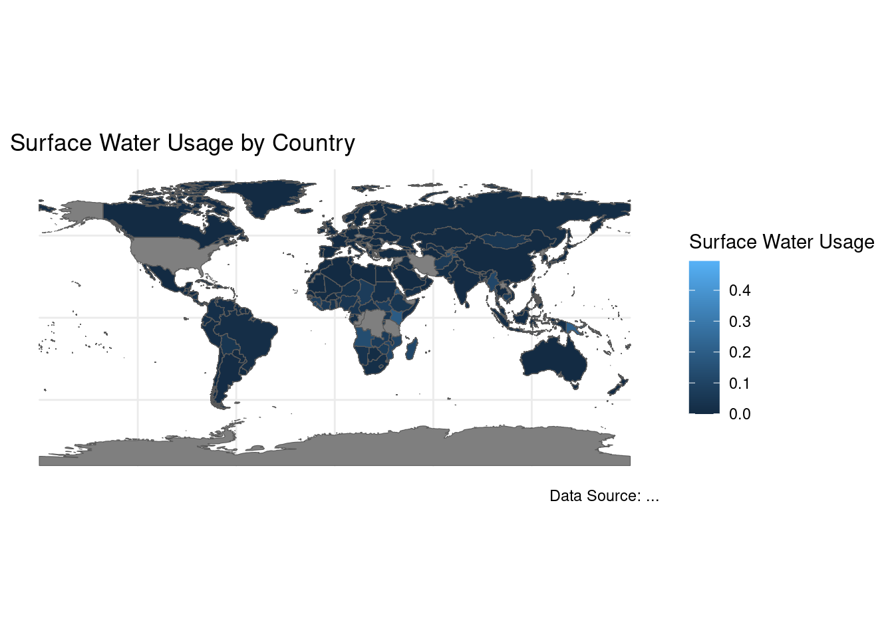
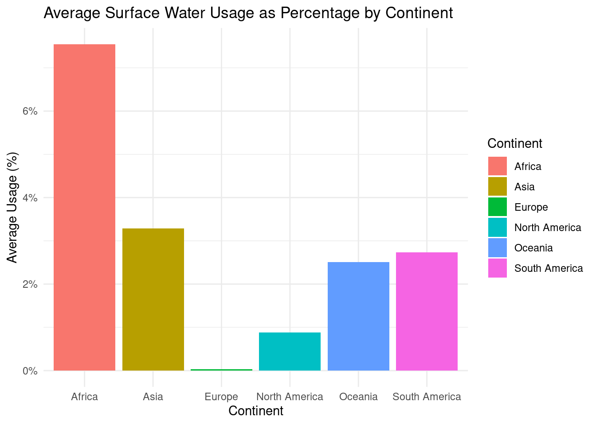
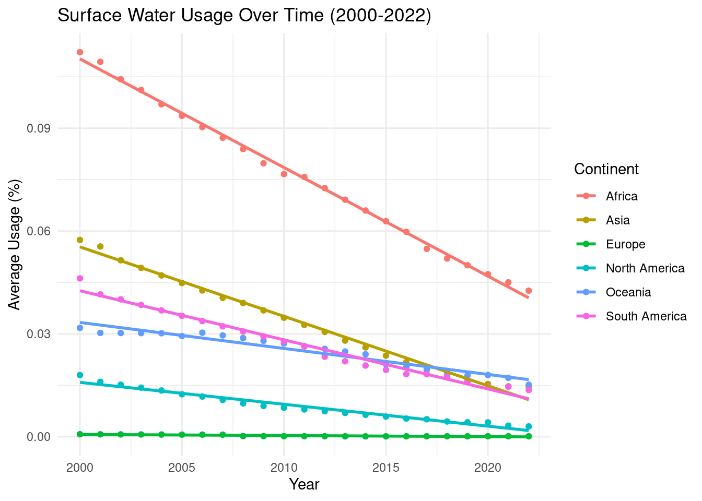
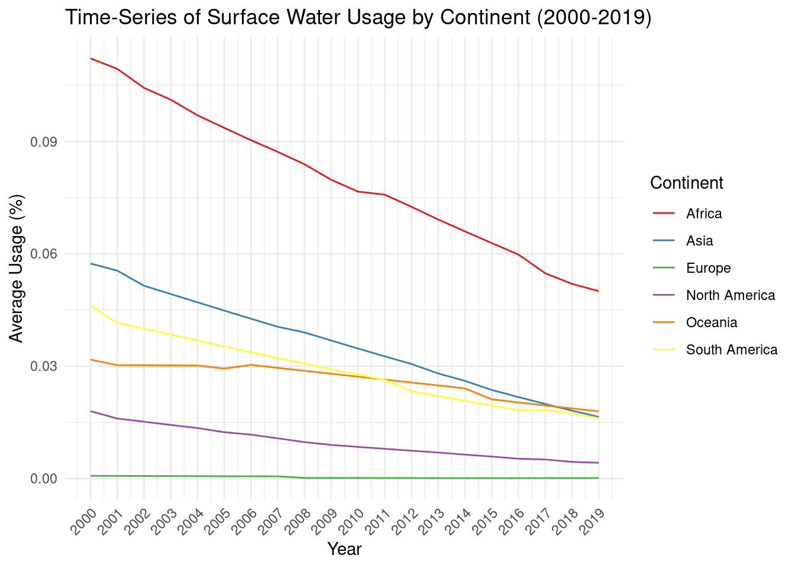

Addressing the Surface Water Dependency: A Global Challenge
Author
Christopher Adeogun
Published
April 13, 2024
Introduction
Surface water remains a primary source of water for many populations around the globe. UNICEF, in its commitment to ensure clean water access for all, presents this analysis to shed light on the current reliance on surface water and the need for sustainable, clean water solutions.
Background
Surface water includes natural water found on the Earth’s surface, like rivers, lakes, and wetlands. While these sources are vital for the ecosystem and human use, reliance on untreated surface water can pose severe health risks, including waterborne diseases and exposure to environmental pollutants.
World Map: World Map of Surface Water Usage
library(ggplot2)library(rnaturalearth)library(rnaturalearthdata)library(dplyr)library(readr)data <- readr::read_csv("unicef_indicator_1(1).csv") %>%select(year, country, continent, surface_water_usage)world <-ne_countries(scale ="medium", returnclass ="sf")world_data <-left_join(world, data, by =c("admin"="country"))ggplot(world_data) +geom_sf(aes(fill = surface_water_usage)) +theme_minimal() +labs(fill="Surface Water Usage", title="Surface Water Usage by Country",caption="Data Source: ...")

World Map of Surface Water Usage
This map provides a visual representation of surface water usage across different countries. Highlighting regions with high dependency on surface water and identifying areas potentially at risk of waterborne diseases and environmental challenges.
Analysis
Focus on countries with high surface water usage and discuss possible reasons for this dependency (e.g., geographical features, lack of infrastructure, socio-economic factors). Consider the implications of high usage levels, including sustainability concerns, health risks, and the urgent need for clean water initiatives.
Bar chart: Average Surface Water Usage as Percentage by Continent
continent_summary <- data %>%group_by(continent) %>%summarise(average_percentage =mean(surface_water_usage, na.rm =TRUE)) %>%ungroup()ggplot(continent_summary, aes(x=continent, y=average_percentage, fill=continent)) +geom_col() +theme_minimal() +labs(title="Average Surface Water Usage as Percentage by Continent",x="Continent",y="Average Usage (%)",fill="Continent") +scale_y_continuous(labels = scales::percent)

Average Surface Water Usage as Percentage by Continent
In examining the average surface water usage by continent, it is apparent that some regions exhibit notably higher dependency on surface water. These disparities suggest a pronounced reliance on rivers, lakes, and other surface bodies of water for daily needs, including drinking, agriculture, and sanitation.
Analysis:
Africa and Asia: These continents show higher averages of surface water usage, which is indicative of underlying water scarcity issues or limited access to alternative water sources such as groundwater or desalinated water. The heavy reliance on surface water in many African and Asian countries poses significant risks, including vulnerability to droughts and waterborne diseases.
Europe and North America: These continents typically exhibit lower dependence on surface water, reflecting more diversified water sources and robust infrastructure. The challenges here might focus more on pollution control and maintaining the sustainability of water resources in the face of industrial demand and urban development.
Scatterplot with Linear Regression of Surface Water Usage Over Time (2000-2022)
library(dplyr)library(ggplot2)filtered_data <- data %>%filter(year >=2000& year <=2022) %>%group_by(year, continent) %>%summarise(average_usage =mean(surface_water_usage, na.rm =TRUE)) %>%ungroup()
`summarise()` has grouped output by 'year'. You can override using the
`.groups` argument.
ggplot(filtered_data, aes(x=year, y=average_usage, color=continent)) +geom_point() +# Plot pointsgeom_smooth(method="lm", se=FALSE) +theme_minimal() +labs(title="Surface Water Usage Over Time (2000-2022)",x="Year",y="Average Usage (%)",color="Continent")
`geom_smooth()` using formula = 'y ~ x'

Scatterplot with Linear Regression of Surface Water Usage Over Time
This scatterplot, enhanced with a linear regression line, tracks the evolution of average surface water usage over time, segmented by continent. The trend lines provide a statistical summary, indicating whether the reliance on surface water is increasing, decreasing, or stabilizing regionally.
Detailed Analysis of Continental Trends and Their Implications
Africa:
Climate Variability: Africa faces significant climate variability and extreme weather conditions such as droughts and floods, which highly correlate with fluctuations in surface water availability. The increasing frequency and severity of these events, likely linked to climate change, stress water resources and highlight the urgency of developing resilient water management systems.
Demographic Growth: Rapid population growth intensifies pressure on existing water infrastructure, which is often insufficient to meet growing demands. The correlation between population density and water scarcity underscores the need for scalable water solutions and enhanced conservation efforts.
Asia:
Industrial Growth and Urbanization: Many Asian countries are experiencing rapid industrialization and urbanization, which correlate with increased water pollution and higher water demand. Despite improvements in infrastructure, the immense pressure on water resources presents ongoing challenges.
Innovations in Water Management: Positive trends in some regions of Asia, such as improved sanitation and increased investment in water technology, suggest that targeted policy interventions and infrastructure upgrades can significantly enhance water security.
*Europe:
Climate Change Impacts: Europe’s changing climate patterns, including increased rainfall in northern regions and dryer conditions in the south, affect water management strategies. These variations necessitate adaptive measures in water storage and conservation practices to ensure sustainability.
Advanced Water Management Systems: Europe benefits from advanced water management practices and robust infrastructure, which serve as models for other continents. The correlation between these advanced systems and high standards of water quality and accessibility highlights the effectiveness of sustained investment and regulatory frameworks.
North America:
Technological Advancements: North America’s strong focus on technological innovation in water management correlates with improved efficiency and sustainability in water use. This trend underscores the potential benefits of investing in technology-driven solutions globally.
Regulatory Successes: Effective legislative measures have successfully protected water sources and improved water management practices across the continent. These successes provide valuable lessons on the impact of environmental governance and policy.
Time-Series of Surface Water Usage by Continent (2000-2019)
library(ggplot2)library(dplyr)filtered_data <- data %>%filter(year >=2000& year <=2019) %>%group_by(year, continent) %>%summarise(average_usage =mean(surface_water_usage, na.rm =TRUE)) %>%ungroup()
`summarise()` has grouped output by 'year'. You can override using the
`.groups` argument.
ggplot(filtered_data, aes(x=year, y=average_usage, color=continent)) +geom_line() +# Use line plots to show trends over timescale_x_continuous(breaks =seq(2000, 2019, by =1)) +# Customize x-axis ticksscale_color_brewer(palette ="Set1") +# More distinct colors for claritytheme_minimal() +labs(title="Time-Series of Surface Water Usage by Continent (2000-2019)",x="Year",y="Average Usage (%)",color="Continent") +theme(axis.text.x =element_text(angle =45, hjust =1))

Time-Series of Surface Water Usage by Continent (2000-2019)
The time-series chart offers a detailed look at the fluctuations in surface water usage over nearly two decades. By displaying usage over time, this chart helps identify patterns and anomalies that might not be visible in cross-sectional data.
Analysis of Key Changes in Surface Water Usage
Significant Climate Events:
In regions such as Sub-Saharan Africa, years marked by severe droughts—such as those recorded in 2005 and 2012—showed sharp declines in surface water availability. These events have underscored the region’s vulnerability to climate variability and have stressed the urgent need for adaptive water management strategies that can cope with changing climatic conditions.
Major Infrastructure Projects:
In Asia, particularly in countries like China and India, significant increases in surface water usage in years coinciding with the completion of large-scale dam projects (e.g., the Three Gorges Dam in 2006) illustrate the impact of infrastructure development on water resources. While such projects have increased water availability for agriculture, industry, and domestic use, they have also raised concerns about environmental sustainability and the displacement of communities.
Policy Changes:
In Europe, the implementation of the EU Water Framework Directive in the early 2000s led to more sustainable water practices, reflected in the gradual decrease in surface water usage across several member states. This shows how policy interventions can effectively modify water usage patterns and encourage conservation and sustainable management.
Call to Action!
We urge stakeholders to support initiatives that ensure safe, sustainable water access for all, particularly in underserved regions. By bolstering global efforts in water management, we align with UNICEF’s overarching mission to safeguard the health and well-being of every child, ensuring no child is deprived of their right to clean water: a vital lifeline.
Conclusion and Recommendations
The patterns and correlations identified through this analysis are invaluable for informing future UNICEF initiatives aimed at improving water access and management globally. By understanding the specific challenges and opportunities within each continent, UNICEF can tailor its interventions to be both effective and sustainable.
Policy Recommendations:
Invest in Resilient Infrastructure: Building resilient water infrastructure to withstand climate variability and support growing populations.
Promote Technological Innovations: Encouraging the adoption of innovative technologies that enhance water efficiency and management.
Enhance Regulatory Frameworks: Supporting the development and enforcement of comprehensive water management policies.
Foster Community Engagement: Empowering local communities to take an active role in managing their water resources.